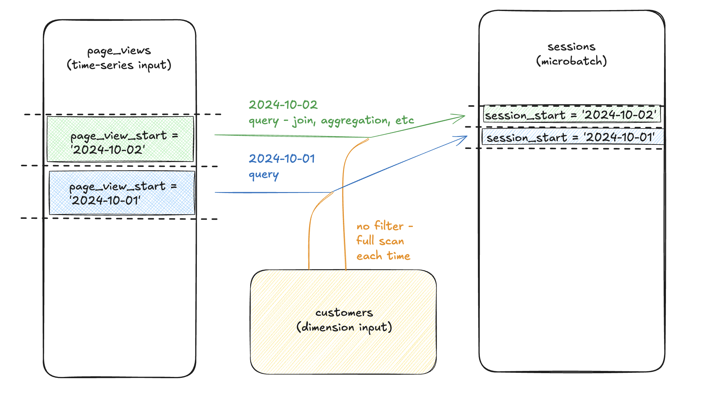

append, merge, delete+insert, insert_overwrite
The incremental_basic exercise wired up the materialization but said nothing about strategy — what dbt does when those new rows arrive. By default, dbt picks a sensible strategy per warehouse. On DuckDB the default is merge if a unique_key is defined and append otherwise. Either way, the choice matters once your data has updates, not just inserts.
This exercise makes the strategy explicit.
Strategy answers the question: “Once dbt has the rows it wants to load, how does it merge them with what’s already in the table?”
There are four common strategies (plus microbatch, the new one for time-series data, deferred to a later stage):
| Strategy | What it does | Good for |
|---|---|---|
append |
INSERT INTO target SELECT ... — blindly adds rows. No de-dup, no updates. |
Truly immutable event streams (clickstream, IoT readings). |
merge |
MERGE INTO target USING staging ON unique_key WHEN MATCHED THEN UPDATE WHEN NOT MATCHED THEN INSERT — upserts. |
Tables that get new rows and receive updates to old ones. |
delete+insert |
Two-step: DELETE FROM target WHERE unique_key IN (...) then INSERT INTO target SELECT .... |
Same use case as merge, on warehouses that don’t support MERGE natively (older Redshift). |
insert_overwrite |
Replaces entire partitions of the table (e.g., a day of data). | Partitioned tables on BigQuery — way faster than merge for time-partitioned data. |
For DuckDB, merge is supported natively and is the most-used strategy when unique_key is set.
unique_key doesunique_key is the column (or list of columns) dbt uses to decide which row in the existing table to update when a row with the same key arrives in the new batch.
{{ config(
materialized='incremental',
unique_key='order_id',
incremental_strategy='merge'
) }}
select ... from {{ ref('stg__orders') }} {% if is_incremental() %}where ...{% endif %}
When this runs the second time, dbt issues SQL roughly like:
merge into "main"."fct_order_events" as target
using (
select * from "main"."stg__orders" where order_date > (select max(order_date) from "main"."fct_order_events")
) as source
on target.order_id = source.order_id
when matched then update set
customer_id = source.customer_id,
order_date = source.order_date,
status = source.status
when not matched then insert (order_id, customer_id, order_date, status)
values (source.order_id, source.customer_id, source.order_date, source.status)
So if order #42’s status changed from placed to shipped, the row gets updated in place rather than duplicated.
Without unique_key, dbt has no idea which existing row corresponds to a new row, so it falls back to append regardless of the strategy you wrote. merge without unique_key is silently append.
The jaffle_shop seed never changes between runs, so the merge logic doesn’t have updates to apply — every second-run insert finds 0 matching rows. But the configuration matters: you’ve now declared the contract for how this model handles updates, even if the demo data doesn’t exercise it.
A real production check this guards against: the source system corrects an order status (vendor sent the wrong update), the corrected row arrives in the next dbt run, and the merge strategy upserts it cleanly. Without the merge strategy, you’d have two rows for the same order — the original and the correction — and downstream queries would either count it twice or pick the wrong one.
mergeappend — your source genuinely never updates. Pageviews. Sensor readings. Audit log entries. You want every event preserved including possible duplicates that real-life appends would cause.delete+insert — your warehouse doesn’t support MERGE (old Redshift). dbt translates the strategy to two statements; the result is functionally similar to merge.insert_overwrite — your table is partitioned by date, and you’re rebuilding yesterday’s partition each morning. merge would scan the whole table to find matching keys; insert_overwrite just blows away yesterday’s partition and reloads it. Big BigQuery cost saver.For most warehouses + most use cases, merge is the right default and what production dbt projects converge on.
merge without unique_key. Silently degrades to append — your second run adds rows instead of updating them. If you see duplicates appearing in an “incremental merge” model, this is almost always the cause.unique_key=['order_id', 'event_type'] (a YAML/Jinja list, not a comma-separated string). Single-column: unique_key='order_id' (a string).--full-refresh after changing the schema. Adding a new column doesn’t backfill old rows. The incremental insert applies the new schema only to new rows. To fix the historical data, force a dbt build --select fct_order_events --full-refresh.Press n to start the exercise.
1. Open dbt_project/models/marts/fct_order_events.sql. Replace the single-arg config block with the multi-arg version:
{{ config(
materialized='incremental',
unique_key='order_id',
incremental_strategy='merge'
) }}
select
order_id,
customer_id,
order_date,
status
from {{ ref('stg__orders') }}
{% if is_incremental() %}
where order_date > (select max(order_date) from {{ this }})
{% endif %}
The select and is_incremental() block stay identical. Only the config grows.
Note the syntax: config(...) takes keyword arguments separated by commas. Multi-line is idiomatic for readability but functionally equivalent to a single line.
2. Rebuild:
cd dbt_project
dbt build --select fct_order_events
Behind the scenes dbt is now issuing MERGE INTO ... USING ... WHEN MATCHED THEN UPDATE ... instead of plain INSERT INTO. The seed didn’t change, so no rows match the watermark filter — but the SQL pattern dbt emits is now upsert-shaped.
3. Confirm the row count is unchanged at 99 and order_id is still unique:
duckdb ../database/dev.duckdb -c "select count(*) from fct_order_events"
duckdb ../database/dev.duckdb -c "select count(distinct order_id) from fct_order_events"
Both should return 99.
4. (Optional, to see the merge SQL.) Look at target/run/dbt_project/models/marts/fct_order_events.sql after the build:
cat target/run/dbt_project/models/marts/fct_order_events.sql | head -30
You’ll see the rendered merge into ... statement that dbt generated. The WHEN MATCHED THEN UPDATE and WHEN NOT MATCHED THEN INSERT clauses make the upsert behavior explicit.
5. Press v to verify.
dbt build --select fct_order_events exits 0 with all nodes succeeding.order_id count is 99 — i.e., no duplicates.| Symptom | Fix |
|---|---|
Compilation Error: ... unexpected ',' inside the config block |
The multi-arg syntax has bad commas — usually trailing or missing. Each kwarg is key=value, separated by ,, no trailing comma needed. |
Catalog Error: MERGE statement not supported by this database |
Some dbt-adapter+warehouse combos don’t support merge. dbt-duckdb 1.10.x does — if you see this, check dbt --version to confirm you’re on the project’s pinned versions. |
Duplicates appear (count != count(distinct)) |
Either the model was rebuilt with append (forgot the incremental_strategy='merge' line) or unique_key is wrong. Confirm the config block is the multi-arg form. |
Row count is 0 after the rebuild |
The merge probably matched-and-updated existing rows but dbt dropped the table first by accident. Try dbt build --select fct_order_events --full-refresh to force a clean rebuild from scratch. |
Press n. The final Stage 4 exercise covers snapshots — the SCD Type 2 mechanism for tracking how a column’s value changes over time. It’s a different beast than incremental: snapshots preserve history rather than overwriting it.